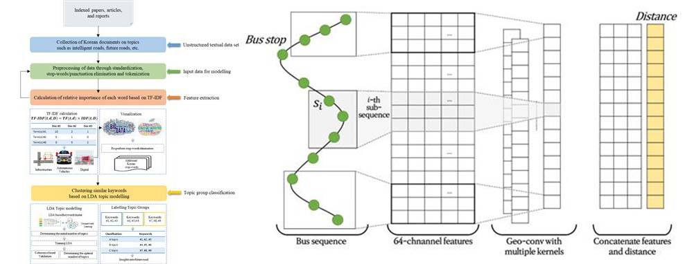
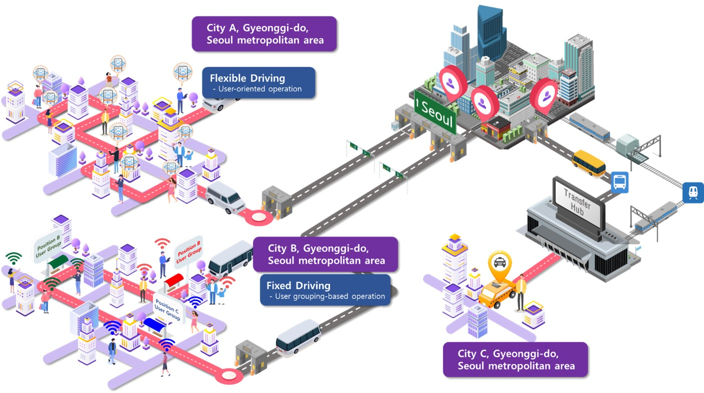
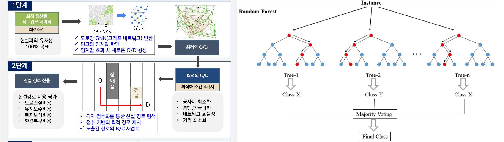
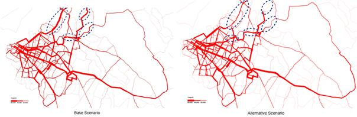
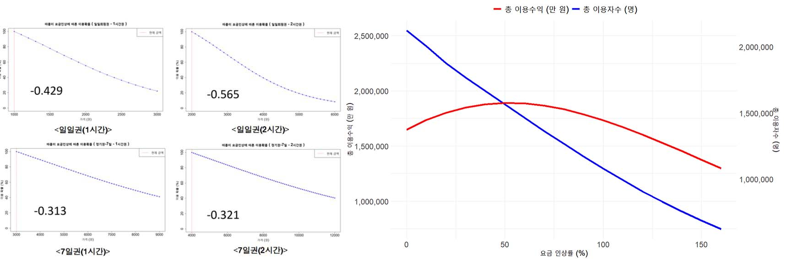

Research area
교통체계연구실(TSAL)에서는 교통분야의 다양한 연구를 수행하고 있습니다.
전통적인 교통계획 분야에서는 통행수요모형 개발 및 Open API를 활용한 모형 고도화, 교통조사, 통행수요추정 및 경제성 분석, 스마트 모빌리티, 대중교통 요금제 및 정책개발 등을 연구합니다.
기계학습 및 정보통신기술 분야에서는 인공지능 기반 통행행태, 빅데이터(통신이력, GPS, 스마트카드 등)를 활용한 수단/경로선택, 스마트폰 기반의 통행실태조사, 디지털트윈을 접목한 차량 및
보행자 시뮬레이션 등을 연구합니다.

교통 빅데이터 및 인공지능 기반 통행행태 연구
- KTDB O/D, 스마트카드, 통신사 통신이력, 모빌리티 서비스 데이터 등의 빅데이터 수집
- 머신러닝을 활용한 이용자 수단/경로선택요인 규명
- 다양한 데이터 융합을 통한 통행사슬 구현 등의 신개념 빅데이터 정립
- 인공지능 또는 빅데이터 기반 계량경제모형을 활용한 수단/경로선택 연구
- 고급계량경제모형 기반의 통행자 이질성(taste heterogeneity) 규명

스마트 모빌리티 연구
- 수요응답형 대중교통(Demand Responsive Transport, DRT) 서비스 모델 개발 및 효과 분석
- 실시간 호출기반 서비스(ride hailing, TNC), Mobility-as-a-Service(MaaS) 모델 개발 및 이용자 행태 분석
- Urban Air Mobility (UAM), 개인교통수단(PM), 공유자전거 등 첨단교통수단 연구
- 자율주행 시대의 통행시간가치 변화 추정

통행수요추정 및 고도화 연구
- GTX, KTX등의 철도, 수요응답형서비스, MaaS 장래수요예측
- 공유자전거, 전동킥보드 등의 마이크로모빌리티(Micromobility) 수요추정
- OpenStreetMap (OSM)과 같은 Open API 기반의 통행수요모형 구축
- 활동기반모형(Activity-based model) 연구 및 개발

ICT 기반 교통혁신연구
- 디지털트윈 및 시뮬레이션 보행자 행태 연구
- 모빌리티허브 구축 및 연계방안 수립
- 모바일폰 기반 통행실태조사 방법론 개발

교통 인프라의 경제적 타당성 분석
- 국내 도로 및 대중교통 사업에 대한 사업성 평가 (한국개발연구원, 서울연구원, 한국철도공사 등)
- 통행시간가치를 비롯한 교통사업 편익 개선 연구
- World Bank, OECD, ADB와 연계한 해외 교통인프라 사업의 타당성 분석
- 개발도상국 대상 O/D 기초자료구축 및 보완, 교통수요추정

교통경제 및 교통정책 연구
- 대중교통 및 친환경교통수단 요금정책 연구(따릉이, 버스준공영제, MaaS 등)
- 대중교통 요금체계, 신교통수단의 가변요금(surcharging), 혼잡비용 요금 설계 및 알고리즘 개발
- 대도시권 교통의 도로혼잡 개선 및 대중교통 활성화 방안 수립 및 관련법 개정 연구
- 교통-토지이용-주거선택의 상관관계 연구
- 인공지능 기반의 텍스트 마이닝을 활용한 미래과제 발굴